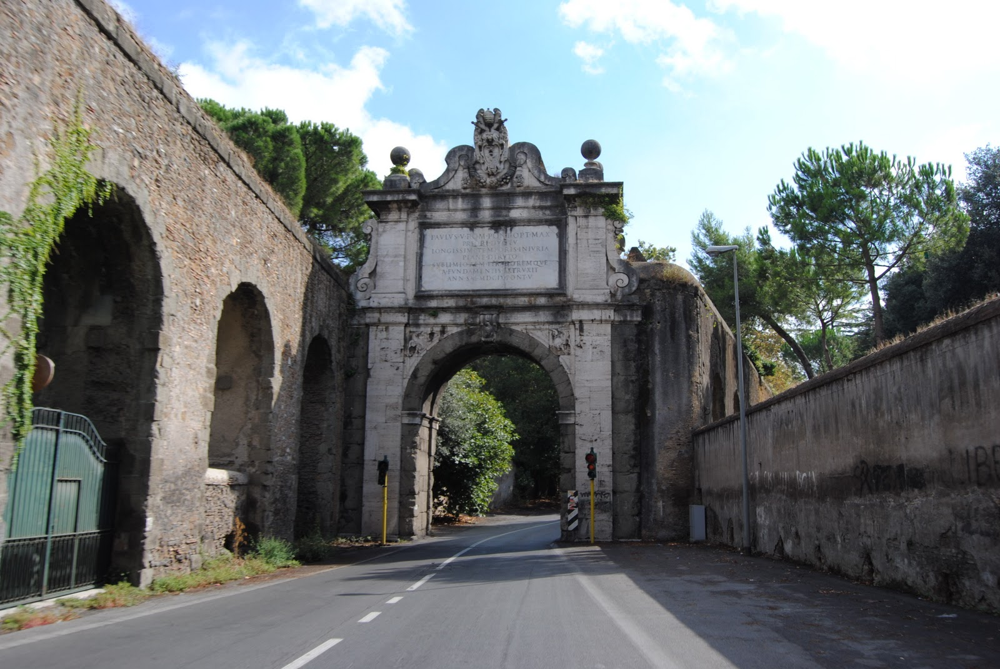

TODOS OS CAMINHOS LEVAM A ROMA
A expressão “todos os caminhos levam a Roma” destaca a importância da rede de estradas romanas. Construídas para conectar regiões e facilitar o deslocamento, muitas possuíam pavimentação de pedras e sistemas de drenagem. Essas vias foram fundamentais para integrar o Império e conectar diversas cidades.
Além de facilitar as viagens, as estradas permitiam o transporte de mercadorias entre cidades, portos e regiões agrícolas. Assim, elas ajudavam a movimentar o comércio e manter diferentes partes do Império conectadas.
PRINCIPAIS VIAS
ROTAS QUE MARCARAM ROMA
-

VIA ÁPIA
A Via Ápia foi construída a partir de 312 a.C. e ligava Roma ao sul da Itália. Era importante para o transporte de pessoas, mercadorias e tropas.
Saiba mais
Sua construção tinha grande importância militar e comercial, permitindo que soldados, viajantes e comerciantes se deslocassem com maior facilidade. A estrada possuía trechos pavimentados com grandes pedras e fazia parte da extensa rede de vias romanas.
-

VIA FLAMINIA
A Via Flaminia foi construída em 220 a.C. e ligava Roma às regiões do norte da Península Itálica, chegando até a região do Adriático.
Saiba mais
Além de facilitar o deslocamento de tropas, a estrada ajudava na circulação de pessoas e mercadorias entre Roma e as cidades do norte.
-

VIA AURELIA
A Via Aurelia seguia pela costa oeste da Itália, partindo de Roma em direção ao norte.
Saiba mais
Por passar por diversas cidades costeiras, a via contribuía para a circulação de pessoas e produtos. Também fazia parte da rede que conectava Roma às regiões próximas ao Mediterrâneo.
-

VIA CASSIA
A Via Cassia ligava Roma às regiões da Etrúria, seguindo posteriormente em direção ao norte da Itália.
Saiba mais
A estrada era utilizada para viagens, transporte de mercadorias e comunicação entre diferentes comunidades. Sua posição ajudava a conectar Roma com importantes áreas do interior da península.
-

VIA EGNATIA
A Via Egnatia era uma importante estrada dos territórios orientais de Roma. Ela começava na região do Mar Adriático e atravessava os Bálcãs em direção ao Oriente.
Saiba mais
A rota conectava diferentes cidades e regiões do Império, sendo importante para o comércio, comunicação e deslocamento militar.